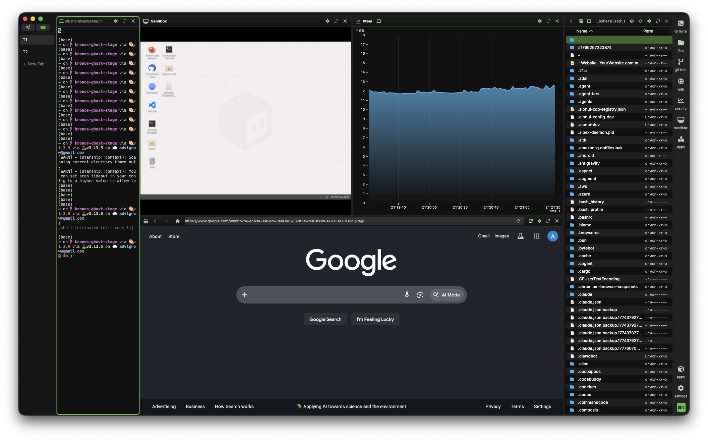
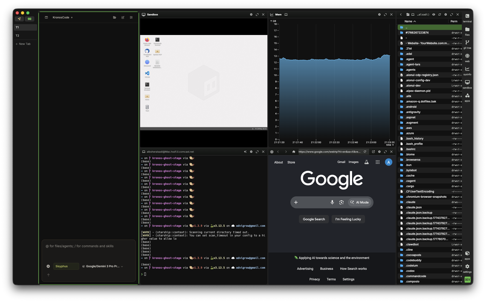
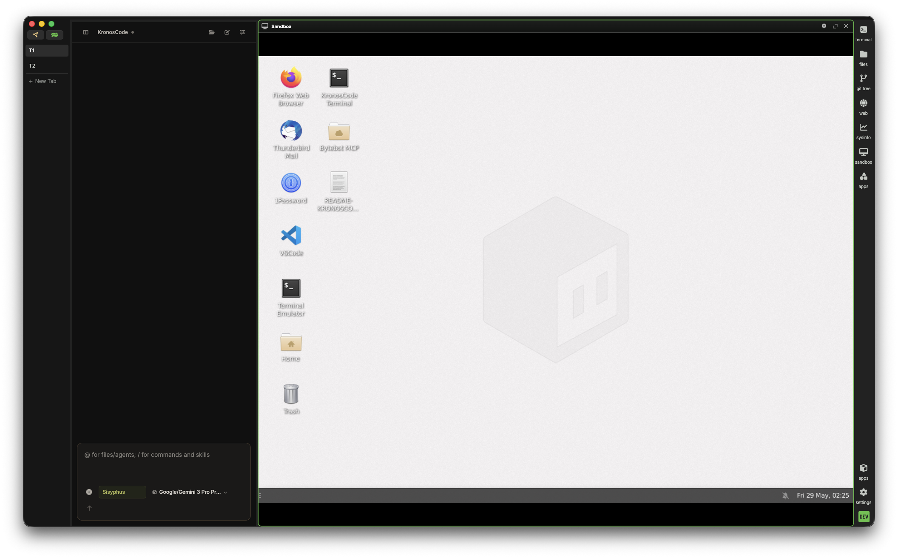

KronTerm fuses terminal, editor, browser, and AI into a single workspace. Stop juggling 5+ apps and start shipping.

Everything you need to build, debug, and ship — without leaving the terminal.
Drag, drop, resize, and arrange terminals, editors, web views, AI chats, and sandboxes into any layout. Every block can full-screen with one click.
KronosCode is the AI engine built into the terminal itself. It reads your output, understands your workspace, and controls every block — all through native MCP tools.

Open web views as first-class blocks alongside your terminals. Browse documentation, preview your app, check dashboards, or scrape data — all without leaving KronTerm.
Your remote connections survive network drops, sleep cycles, and even KronTerm restarts. Automatic reconnection means you never lose your session mid-work.
wsh file
Spin up isolated environments alongside your code — not in a separate tab. Run commands, test scripts, and iterate without leaving your flow.
KronosCode is not just another AI chatbot. It's a first-class citizen of your terminal workspace with the ability to read, write, and control every aspect of your development environment through native MCP tools.
Unlike traditional AI assistants that live in a separate window, KronosCode is embedded into the terminal itself. It sees your output, understands your context, and can manipulate your workspace in real-time.
Capture these key views to showcase KronTerm's capabilities in documentation and marketing.
Full workspace with multiple blocks (terminal, browser, AI chat) arranged in a split layout.
KronosCode side panel showing AI conversation and tool execution results.
Inline browser block showing a web page alongside terminal blocks.
Multiple agents running in parallel with the Agent Control Protocol dashboard.
Isolated sandbox block running tests or experiments.
Dark/light mode transition showing the adaptive UI.
Open source. Zero accounts. Zero telemetry. Used by developers everywhere.
Autonomous TUI agents that live in your workspace. Orchestrate, navigate, and generate — all through the Agent Control Protocol.
Personal automation agent — orchestrates your workspace, runs workflows, manages your dev loop.
File system intelligence — navigates, understands, and operates on your codebase.
Code generation & analysis — powered by advanced AI for deep engineering work.
Security & compliance agent — scans for vulnerabilities and enforces coding standards.
Analytics & insights agent — tracks performance metrics and provides actionable insights.
Web automation agent — browses, fills forms, takes screenshots, and extracts data from the web.
Free and open source. macOS, Linux, Windows. No accounts, no telemetry.
Everything you need to know about KronTerm.